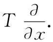

现在我们就能够做一件非常有趣而巧妙的事情——并且是使数学绚丽多彩的一些事物的标志。前面对T的梯度或▽T是一个矢量的论证，与我们究竟对哪一个 标量场进行微分无关。假若T被任一标量场 代替，所有论证可以同样进行。既然不管我们对什么求导，那些变换公式都相同，那么就可以略去T而由一个算符方程
来代替式（2.26），正如金斯（Jeans）曾经说过的那样，我们让算符“忙于对某事物求导”。
由于这些微分算符本身就已如同一个矢量的分量那样进行变换，所以我们可以称它们为一个矢量算符 的分量，即可以写成：
我们已经把T去掉而使梯度抽象化了——这是一个绝妙的想法。
当然，你必须始终记住▽是个算符。它单独没有什么意义。如果▽本身没有什么意义，那么要是乘以一标量——比如T——那乘积T▽又会有什么意义呢（我们总可以用一标量乘一矢量）？它仍然不具有什么意义。它的x分量是
 （2.30）
它不是一个数，而仍然是某种算符。然而，按照矢量代数，我们仍可以把T▽称为一个矢量。
现在让我们在▽的另一边乘上一标量，使之形成乘积（▽T）。在普通代数中
TA=AT， （2.31）
但我们得记住，算符代数稍有别于普通的矢量代数。用算符时，必须时刻保持正确顺序，以便使运算构成适当的意义。如果你真正记住了算符▽遵循与微商符号相同的惯例，那你就不会有任何困难。凡要求导的东西一定要放在▽的右边。这里，先后次序是重要的。
记牢了这个次序问题，我们就懂得T▽是一个算符，但▽T却不再是一个饥饿的算符，该算符已完全被满足了。并且它确实是一个有意义的物理矢量，代表T的空间变化率。▽T的x分量就是T在x方向上变化得多快。矢量▽T的方向是什么？我们知道，T在任一方向上的变化率等于▽T在该方向的分量，参见式（2.15），由此可以推知，▽T的方向是它最大而可能存在的分量的方向——换句话说，是T变化得最快的方向。T的梯度具有（在T处）最急剧上升的斜率的方向。